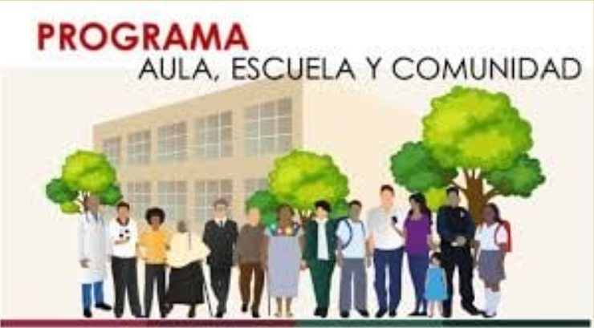

Desarrollo
Como proyecto PAEC (Programa-Aula-Escuela-Comunidad), somos co-partícipes en la
concientización y sensibilización de incentivar y motivar a la comunidad estudiantil de recolectar
residuos contaminantes.
Por ello, la importancia de implementar un sistema sencillo y práctico que nos muestre los
resultados de reciclajes en papel, vidrio y plástico(pet).
Se canalizará de ser aprobado y autorizado por las autoridades correspondientes del sistema
ITACE, y después de realizar el concurso estatal de innovación energética, a la persona
responsable, la tarea de recolectar a través de la comunidad estudiantil, cantidades de residuos,
para ser entrega a Organismos encargados de realizar el proceso de reciclaje.
